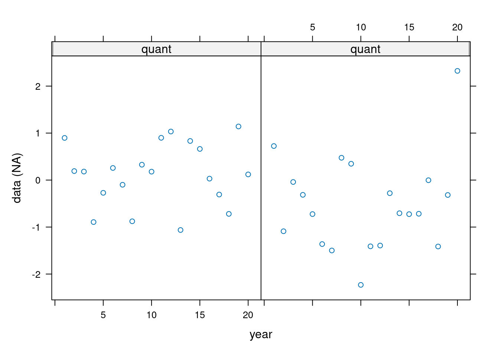

The Fisheries Library in R (FLR) is a collection of tools for quantitative fisheries science, developed in the R language, that facilitates the construction of bio-economic simulation models of fisheries systems.
FLR builds on the powerful R environment and syntax to create a domain-specific language for the quantitative analysis of the expected risks and effects of fisheries management decision. The classes and methods in FLR consider uncertainty an integral part of our knowledge of fisheries system. […]
To follow this tutorial you should have installed the following packages:
You can do so as follows,
install.packages(c("FLCore"), repos="http://flrproject.org/R")The main classes (i.e. data structures) and methods
(i.e. procedures) in the FLR system are found in the FLCore
package. Let’s load it first
library(FLCore)FLQuant classThe basic element on which the FLR classes are based is the
FLQuant class. We can look at the structure of the class in
its help page
help(FLQuant)It is a six-dimensional array, in which the first dimension is free
to have any name, quant by default, commonly age,
while the other five have set names:
year: year of the data point.unit: any subdivision of the data not based on space or
time, for example gender (male and
female).season: any time step shorter than year (e.g. month,
quarter, week).area: spatial subdivision of dataiter: multiple iterations of the same process
(e.g. bootstrap, Bayesian, Monte Carlo, …)We can now call the FLQuant() constructor method to see
an example with some random numbers
FLQuant(rlnorm(20), dim=c(4,5), quant="age", units="kg")An object of class "FLQuant"
, , unit = unique, season = all, area = unique
year
age 1 2 3 4 5
1 0.604 0.974 0.991 1.685 1.364
2 1.938 2.099 3.139 0.850 0.534
3 0.248 1.517 5.280 0.612 0.595
4 3.147 6.164 1.062 0.936 1.432
units: kg and this produces an FLQuant object with some numbers
for ages 1 to 4, and years 1 to 5. The name of the first dimension has
been specified to be “age”, while the units of measurement, “kg”, have
been stored as an attribute to the array.
An important part of the information associated with any dataset is
kept in an FLQuant as the dimnames of the
array. For example, we can specify in the constructor call the names of
any of the dimensions, by using the dimnames argument
FLQuant(rlnorm(20), units="kg",
dimnames=list(age=0:3, year=2010:2014))An object of class "FLQuant"
, , unit = unique, season = all, area = unique
year
age 2010 2011 2012 2013 2014
0 5.057 0.157 0.691 1.005 0.592
1 0.700 4.844 2.500 2.986 18.759
2 1.195 3.671 0.280 3.452 0.353
3 0.815 0.884 0.411 2.651 0.431
units: kg There are a number of methods and ways to create FLQuant
objects from different R objects (vector,
matrix, array or data.frame) once
loaded into R, please see ?FLQuant and
?as.FLQuant for a complete list of available methods.
Objects of this class have the same properties as any
array in R, with some important differences. For example,
subsetting on an FLQuant does not drop by default unused
dimensions
flq <- FLQuant(rlnorm(20), units="kg",
dimnames=list(age=0:3, year=2010:2014))
flq[1,]An object of class "FLQuant"
, , unit = unique, season = all, area = unique
year
age 2010 2011 2012 2013 2014
0 0.833 0.930 0.579 0.538 0.666
units: kg dim(flq[1,])[1] 1 5 1 1 1 1so they remain valid FLQuant objects. Similarly,
arithmetic operations on objects of the class, against each other or
against numeric vectors, always return an FLQuant
object.
flq * 2An object of class "FLQuant"
, , unit = unique, season = all, area = unique
year
age 2010 2011 2012 2013 2014
0 1.665 1.861 1.159 1.076 1.332
1 1.746 1.586 1.135 2.588 2.614
2 0.957 1.617 0.916 1.524 0.465
3 4.028 4.846 1.193 0.765 1.543
units: kg flq + (flq * 2)An object of class "FLQuant"
, , unit = unique, season = all, area = unique
year
age 2010 2011 2012 2013 2014
0 2.498 2.791 1.738 1.614 1.997
1 2.618 2.379 1.702 3.882 3.922
2 1.435 2.426 1.374 2.286 0.698
3 6.042 7.269 1.790 1.148 2.314
units: kg plot(FLQuant(rnorm(200), dim=c(2,20)))
L. T. Kell, I. Mosqueira, P. Grosjean, J-M. Fromentin, D. Garcia, R. Hillary, E. Jardim, S. Mardle, M. A. Pastoors, J. J. Poos, F. Scott, R. D. Scott; FLR: an open-source framework for the evaluation and development of management strategies. ICES J Mar Sci 2007; 64 (4): 640-646. doi: 10.1093/icesjms/fsm012
This document is licensed under the Creative Commons Attribution-ShareAlike 4.0 International license.